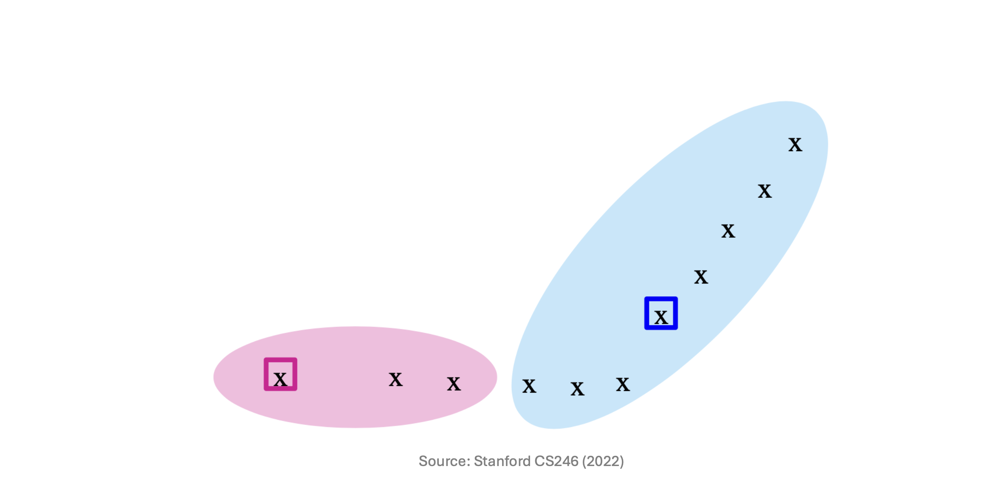
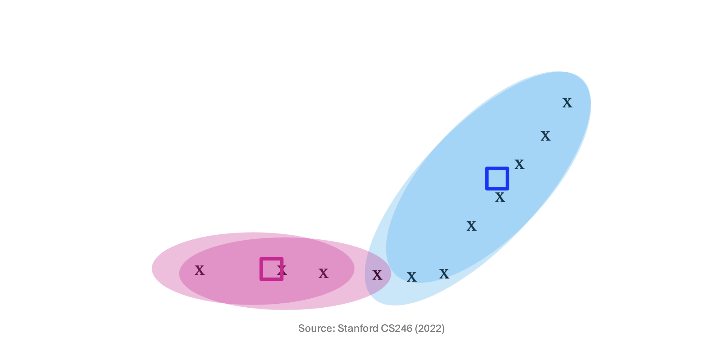
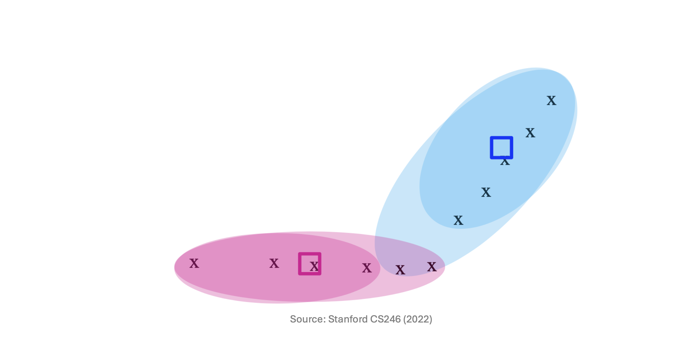
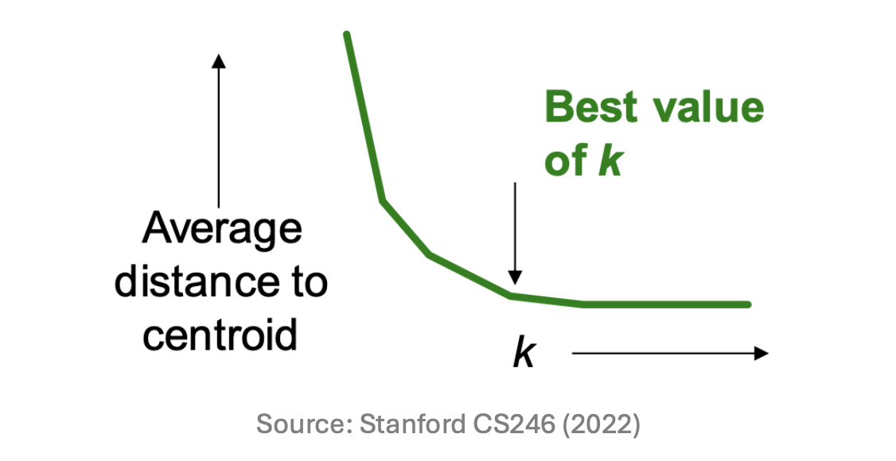
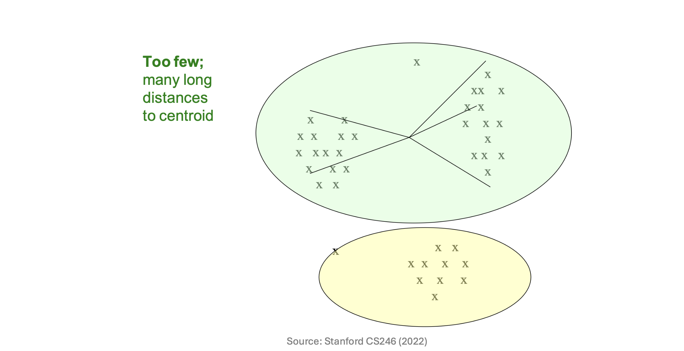
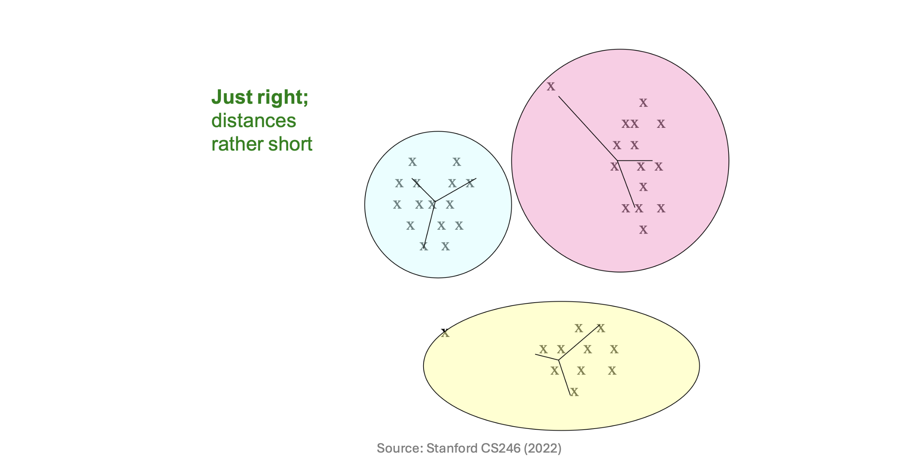
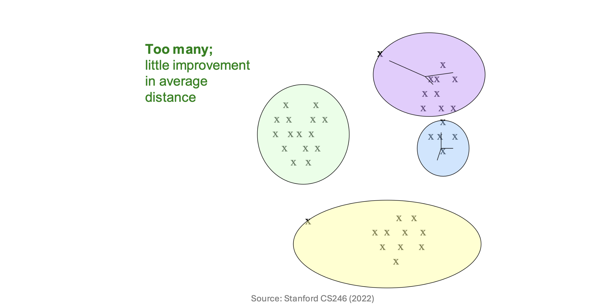

1. Introduction to K-means Clustering
계층적 군집화에 이어, 이번 포스트에서는 점 할당(Point Assignment) 방식의 가장 대표적인 알고리즘인 K-means Clustering에 대해 살펴봅니다. K-means는 데이터가 유클리드 공간(Euclidean space)에 존재하며, 군집의 개수인 \(k\)가 사전에 주어졌을 때 사용하는 알고리즘입니다.
K-means 알고리즘의 궁극적인 수학적 목표는 각 데이터 포인트에서 자신이 속한 군집 중심(Centroid)까지의 거리의 제곱합(Sum of Squared Distances, SSD)을 최소화하는 것입니다. 이를 수식으로 표현하면 다음과 같은 목적 함수 \(J\)를 최소화하는 중심점 \(\mu_j\)와 군집 할당 \(C_j\)를 찾는 최적화 문제가 됩니다.
\[J = \sum_{j=1}^{k} \sum_{x \in C_j} ||x - \mu_j||^2\]
2. The K-means Algorithm Steps
- K-means 알고리즘은 EM(Expectation-Maximization) 알고리즘의 일종으로, 다음의 단계를 수렴할 때까지 반복하여 최적해를 찾아갑니다.
- Initialization (초기화): 공간 상에 \(k\)개의 초기 중심점(Centers)을 임의로 선택합니다.
- Assignment (할당): 각 데이터 포인트에 대해, 현재 설정된 \(k\)개의 중심점 중 가장 가까운(Closest) 중심점을 찾아 해당 군집으로 할당합니다.
- Update (업데이트): 모든 포인트의 할당이 끝나면, 각 군집에 새로 할당된 데이터 포인트들의 산술 평균(Average)을 계산하여 해당 군집의 중심점을 새로운 위치로 갱신합니다.
- Convergence (수렴 확인): 더 이상 데이터 포인트들이 속한 군집을 바꾸지 않으면(Points don’t move between clusters), 알고리즘이 수렴한 것으로 판단하고 종료합니다.
3. Shortcoming of K-means: The Initialization Problem
K-means는 빠르고 직관적이지만 치명적인 단점이 있습니다. 바로 초기 중심점(Initial centroids)의 위치에 따라 알고리즘의 수렴 결과가 극도로 달라진다는 것입니다.
목적 함수가 Non-convex(비볼록) 형태이기 때문에, 잘못된 초기화는 알고리즘을 최적의 해(Global Optima)가 아닌 지역 최솟값(Local Minima)에 빠뜨리게 합니다. 예를 들어, 데이터가 명확히 두 그룹으로 나뉘어 있음에도 초기 중심점 두 개가 데이터가 희소한 엉뚱한 곳에 모여서 시작한다면, 알고리즘은 의미 없는 군집을 형성한 채 멈춰버릴 수 있습니다.
4. K-means++: A Smarter Initialization
이러한 K-means의 한계를 극복하기 위해 등장한 것이 K-means++ 알고리즘입니다. 핵심 아이디어는 “서로 다른 클러스터에 속할 가능성이 높은, 즉 서로 최대한 멀리 떨어져 있는 포인트들을 초기 중심점으로 선택하자”는 것입니다.
K-means++의 초기화 과정은 다음과 같습니다:
- 우선 작은 샘플 집합 \(S\)를 추출한 뒤 이들을 군집화하여 그 중심을 초기값으로 사용합니다. 이때 샘플 사이즈 \(|S|\)는 전체 데이터 크기가 \(n\)일 때 대략 \(k \times \log n\)에 비례하도록 설정합니다.
샘플 포인트를 똑똑하게 선택하기 위해 다음의 확률적 접근을 사용합니다:
- 데이터 포인트를 무작위 순서로 방문합니다.
- 현재 점 \(p\)에서, “이미 선택된 샘플 포인트들 중 가장 가까운 점까지의 거리”를 \(D(p)\)라고 정의합니다.
- 점 \(p\)를 새로운 중심점 샘플로 추가할 확률을 \(D(p)^2\)에 비례하게 설정합니다.
즉, 기존에 뽑힌 중심점들로부터 멀리 떨어져 있는 데이터 포인트일수록 다음 중심점으로 뽑힐 확률이 기하급수적으로 높아집니다. 다음 도식들을 통해 이렇게 선택된 중심점들이 어떻게 안정적인 클러스터를 형성해 나가는지 확인할 수 있습니다.



5. Getting the \(k\) Right: The Elbow Method
K-means를 사용하기 위해서는 사전에 군집의 개수 \(k\)를 알아야 하지만, 현실의 데이터 분석에서는 최적의 \(k\)를 알 수 없는 경우가 대부분입니다. 따라서 시행착오(Trial and error)를 통해 적절한 \(k\)를 추론해야 합니다.
최적의 \(k\)를 찾는 대표적인 방법은 다음과 같습니다:
- \(k\)의 값을 점진적으로 증가시키며 K-means를 여러 번 수행합니다.
- 각 \(k\)에 대해 “중심점까지의 평균 거리 (Average distance to centroid)”를 계산하여 그래프로 그립니다.

- 그래프의 형태를 직관적으로 분석하기 위해, 실제 데이터 분포에 서로 다른 \(k\)값을 적용했을 때 어떤 현상이 발생하는지 비교해 보겠습니다.
Case 1: \(k\)가 너무 작을 때 (Too few)

- 현상: 억지로 큰 군집을 형성하게 되어, 중심점까지의 거리가 매우 깁니다(Many long distances).
Case 2: 최적의 \(k\)일 때 (Just right)

- 현상: 각 데이터가 자신에게 잘 맞는 군집에 속하므로 거리가 전반적으로 짧아집니다(Distances rather short). 위 Elbow 그래프에서 거리가 급격하게 감소하다가 멈추는 바로 그 지점입니다.
Case 3: \(k\)가 너무 클 때 (Too many)

현상: 이미 잘 뭉쳐있는 군집을 불필요하게 더 쪼개는 상황이므로, \(k\)를 늘리더라도 거리가 줄어드는 정도(Improvement)가 매우 미미해집니다.
결과적으로 거리 그래프가 급격히 꺾이는 구간, 즉 팔꿈치 모양이 나타나는 지점이 바로 가장 합리적인 군집 수인 Best value of \(k\)가 됩니다.